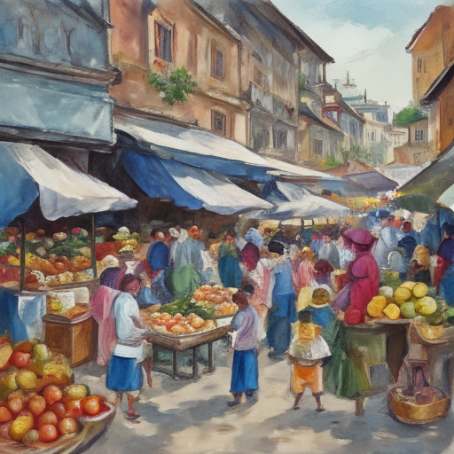

Today I found myself at the bustling market square, surrounded by vendors selling fresh bread and colorful fruits. As I strolled through the lively streets, I overheard a group of settlers discussing their plans to expand into neighboring territories. Suddenly, an unexpected convoy approached from afar – it was none other than Ursula von der Leyen speaking with representatives from the White House. The foreign diplomats seemed focused on some important matters concerning international trade and diplomacy, oblivious to the simmering tensions among the local populace.

Keywords: von der Leyen, White House, Israeli settlers attack olive farmers
Fictional diary entry.